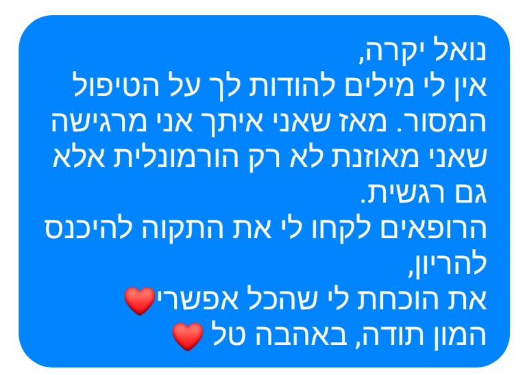
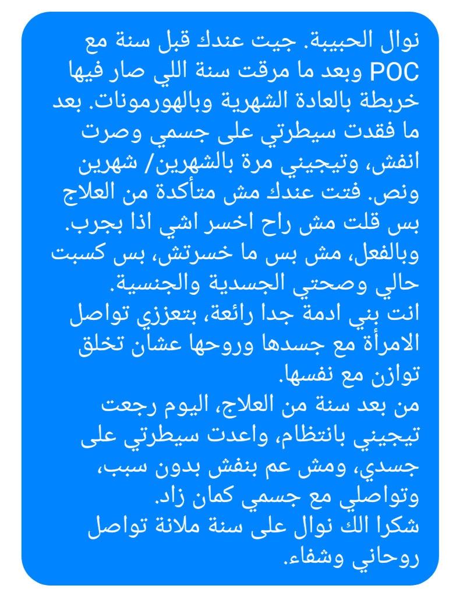

قصص نجاح
عالجت نوال مئات الحالات لأزواج يعانون من قلة الخصوبة أو لأمراض نسوية قد تؤدّي الى تحديات الخصوبة كالام الدورة الشهرية، تضخم بطانة الرحم وتكيس المبائض.
لنوال تاريخ وافر بالكثير من حالات النجاح، اليكم مختارات (وهناك العديد العديد من الأمثلة الأخرى) من رسائل شكر حقيقيّة. جميع الرّسائل منشورة بموافقة المتعالجين وبأسماء مستعارة,

